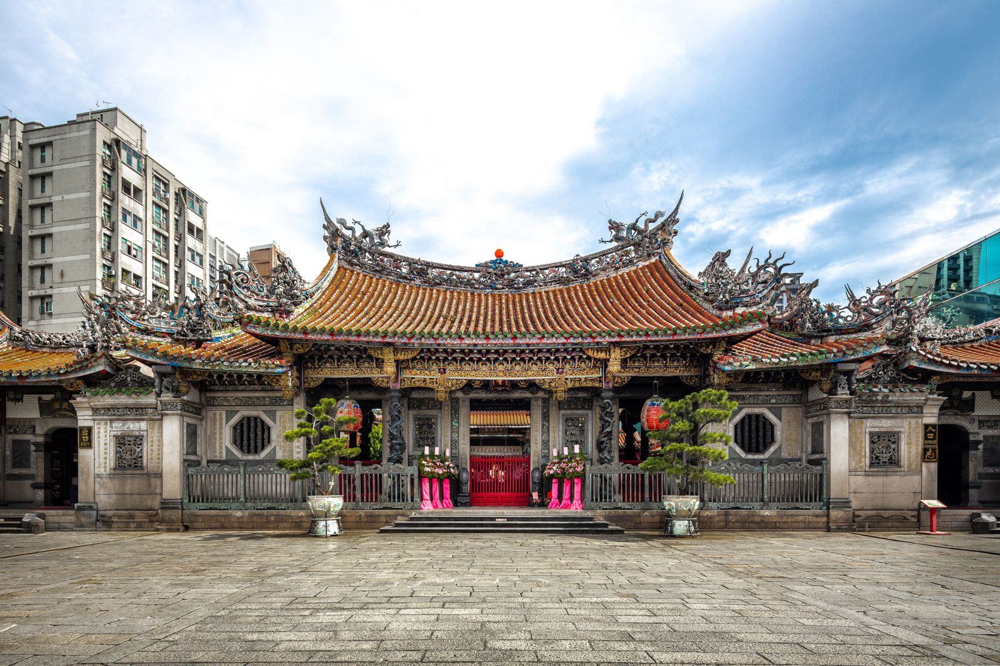
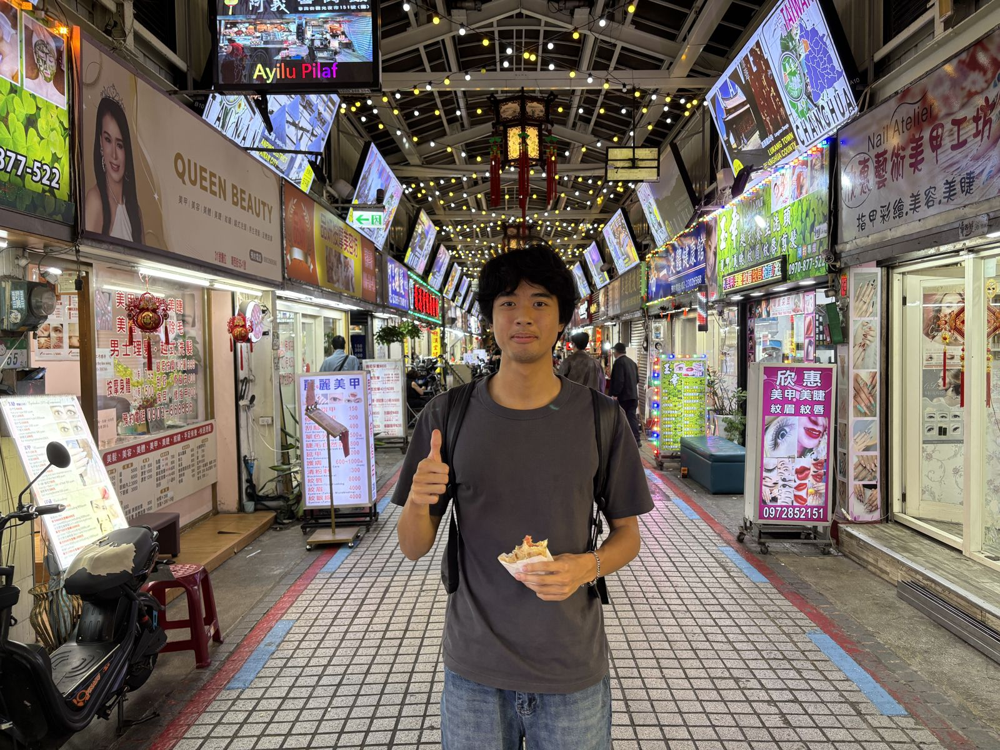
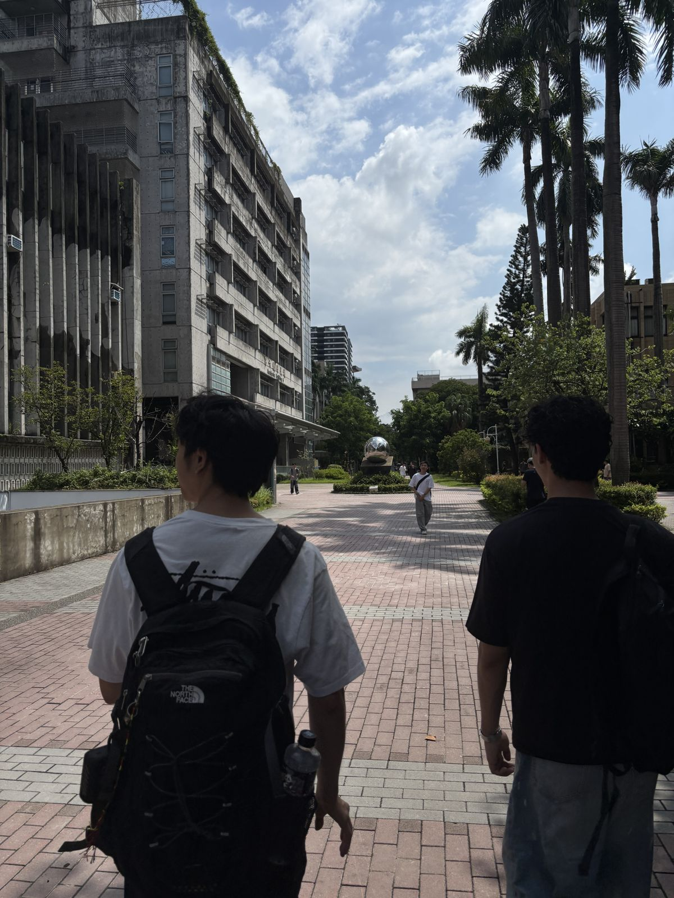

My Neighborhood: Wanhua
I live in Wanhua, near Longshan Temple. It is one of the oldest parts of Taipei. It is a bit rough around the edges, but it is full of character, cheap food and friendly people. There is a 7-Eleven on almost every corner, a street full of street food right where I live, and a street with massage shops close by. Taipei Tech is only a short MRT ride away. I am really happy living here.
The highlights

Longshan Temple
A temple from 1738. It is a bit old and not the cleanest, but it is full of character, especially in the evening when the lanterns are on and people come to pray.

Street food street
Right where I live there is a street with food stalls: grilled skewers, pepper buns, scallion pancakes and fresh fruit. Perfect for a cheap dinner.

Massage street
Close by there is a street full of small massage shops. A foot massage after a long day of walking or skating is cheap and very relaxing.

Getting to Taipei Tech
Take the blue MRT line from Longshan Temple station to Zhongxiao Xinsheng station. It is only a few stops, no transfer, about 15 minutes.
A day in my neighborhood
- Morning: breakfast at my favourite Vietnamese restaurant.
- Late morning: MRT from Longshan Temple to Taipei Tech for class.
- Lunch: onigiri and a drink from the 7-Eleven.
- Afternoon: a run or a skate session in Riverside Park.
- Evening: dinner at the Vietnamese place or on the street food street.
- Night: a walk past Longshan Temple when it is lit up, maybe a foot massage.
Think you know Wanhua now? Take the neighborhood quiz!